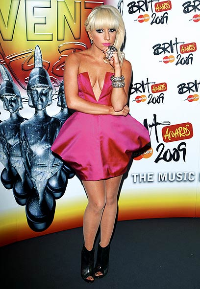
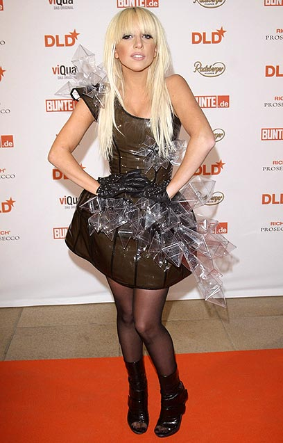

|
||
|
ראיון |
||
|
גאגא. כוכבת הפופ המדוברת ביותר בעולם כרגע
צילום: Gettyimages Imagebank
|
||
|
||


כל מה שסטפני ג'ואן אנג'לינה ג'רמונטה רצתה בחיים - זה לקבל תשומת לב. אז היא החליטה לקרוא לזה אמנות ולעצמה ליידי גאגא. לכבוד הופעתה בארץ שוחח איתה חברה לספסל הלימודים, נמרוד דביר, על סמים, זיופים לצד הפט שופ בויז ותחתונים. ויש גם מסר מנחם לקהילה הגאה בארץ. ליידי בואי
נמרוד דביר
הסיפור של ליידי גאגא, כוכבת הפופ המדוברת ביותר בעולם בשנייה זו, הוא סיפור של אמונה ויהירות. גאגא, או בשמה המלא סטפני ג'ואן אנג'לינה ג'רמונטה, תמיד ידעה שהיא הולכת להיות כוכבת. או יותר נכון, מין פרסונה עולמית בשם "ליידי גאגא", דמות צבעונית, סהרורית, רוחנית ומקושקשת, אותה ציירה במו ידיה ושחררה לאוויר הצהובונים.
מאז שהיתה ילדה, ניזונה מתרבות הפופ סביבה וחלמה על היום שבו תכבוש את הסצנה. וזה הצליח לה: כיום היא שרה על פפראצי, תהילה, סלבז וזוגיות, מכסה את עצמה ביהלומים ובאופנה הזויה ומשווקת תפיסה של גלאמור ניו יורקי.
העולם, מצידו, מחבק אותה: 3 סינגלי הבכורה שלה הגיעו למקום הראשון במצעד האמריקאי, אלבום הבכורה שלה, "The Fame" ("התהילה"), מכר מעל 4 מיליון עותקים ברחבי העולם, היא היתה מועמדת לפרס הגראמי, היא מובילה את רשימת המועמדים בפרסי המוזיקה של MTV עם תשע מועמדויות (כשהיא גוברת על בריטני ספירס, אמינם ומשתווה לביונסה), לאחרונה צולמה לשער המגזין "רולינג סטון" על ידי צלם העל דייוויד לה שאפל (עליה הכריז כמוזה החדשה שלו) והיא כבר הספיקה לעבוד עם הפוסיקט דולז, קניה ווסט, אייקון ועוד.
כיום היא בעיצומו של סיבוב הופעות עולמי בשם "The Fame Ball Tour", שלוקח אותה לכמעט כל מדינה ברחבי הגלובוס. גם אלינו היא תגיע, בשיא הקריירה שלה, כחלק מפסטיבל המוזיקה Non Stop Musix של חברת פלאפון, ותופיע ב־19 באוגוסט בגני התערוכה בתל אביב לצד להקות כמו קייזר צ'יפס וסימפל פלאן.
בימים אלה היא בטוקיו, שם היא משגעת את היפנים עם תסרוקות ושלל פאות הזויות (שערה היה סגול לרגע ובשלב מסוים היא הופיעה עם סוג של חיה מתה על ראשה) וראיונות קיצוניים עוד יותר (בהם התוודתה על חיבתה למפלצות ועל היכולות המיסטית שלה לחזות מה מתרחש בעולם הפופ).
חמש שנים אחורה באוניברסיטת ניו יורק
לכבוד הגעתה לארץ זכינו לשיחת טלפון מהליידי, היישר מטוקיו. לראיון איתה אני מגיע קצת נרגש - חוץ מזה שאני אוהב אותה מאוד ("פוקר פייס" הוא מבחינתי שיר השנה), יש לנו גם נקודה משותפת ברזומה: את גאגא, או סטפני, הכרתי עוד בימים שחלקנו ספסל לימודים, חמש שנים אחורה באוניברסיטת ניו יורק.

ליידי גאגא. מודה שהיא בעלת איברי מין נשיים וגבריים
למרות שהיא למדה מוזיקה ואני דברים אחרים, ידעתי על קיומה בגלל הגאגא, דמות שפעלה גם אז. בימים ההם היא היתה סוג של יחצנית מסיבות ואושיה מקומית, שארגנה ליינים במועדונים נחשבים והופיעה בדאון טאון מנהטן. אלה היו הימים בהם היא יצרה את האלטר אגו שנקרא גאגא - צבעונית, זוהרת, מטושטשת מינית - ואיתו הידסה ברחבי העיר. ואז היא התחילה להמריא. היום, בדיוק באותם מועדונים אותם ייחצנה, מנגנים את השירים שלה.
אחרי שמרכזנית יפנית נרגשת מקשרת בינינו, אני מזכיר לה את התקופה המשותפת שלנו. "וואו", היא צוחקת, "זה היה לפני ארבע שנים, משהו כזה. השתניתי מאז בצורה קיצונית. עזבתי את האוניברסיטה ומאז קרה המון. הייתי אז בת 19, עשיתי מוזיקה, למדתי מוזיקה, לבשתי תחתונים. תקופה אחרת".
אם אני זוכר נכון, זו היתה תקופה שהיית חזק בסצנת המסיבות. גם עשית לא מעט סמים, ואפילו דיברת על זה בראיונות.
"כן. היו אז הרבה סמים. בימים ההם הייתי מסתובבת במסיבות ועושה כל מיני דברים שהיום אני בוחרת שלא לעשות. זו היתה תקופה אפלה. עכשיו אני באור".
לפני שממשיכים, חייבים להסביר איך הפכה סטפני ג'רמונטה מנערת מסיבות לתופעה עולמית. היא נולדה לפני 23 שנים בניו יורק, בת להורים אמידים למדי ממוצא איטלקי. אבא שלה הוא יזם אינטרנט, האם עובדת בתחום הטלקומוניקציה.
לאורך הילדות היא למדה מוזיקה באופן פרטי (כולל נגינה בפסנתר) והלכה לבית ספר קתולי יוקרתי עם האחיות פריס וניקי הילטון. כשהגיעה הזמן לאוניברסיטה, היא נרשמה לאוניברסיטת ניו יורק ללימודי מוזיקה, אבל הראש שלה היה במקומות אחרים.
כבר אז התחיל להתבשל לה הרעיון של ליידי גאגא ובגיל 19 חתמה על חוזה שלא החזיק מעמד בחברת דף ג'ם רקורדס. היא לא התייאשה והחלה להופיעה במועדונים ברחבי העיר, קידמה מסיבות והשתתפה בכל מיני מופעי בורלסק, כשבאחד מהם היא עמדה בבגד ים והפריחה על הקהל בועות סבון (מאוחר היא תסביר שזה היה "אמנות, וכל מי שלא מבין את זה לא יודע על מה הוא מדבר").
"אפילו המשפחה שלי התחילה לקרוא לי גאגא"
באותה תקופה היא חברה לדראג קווין מקומי בשם ליידי סטארלייט והשתיים הפכו לחברות טובות. סטארלייט עזרה לגאגא לגבש את הסטייל שלה וקירבה אותה אל קהילת הגייז. המופע המשותף של השתיים הפך לשיחת העיר וגאגא, על אישיותה הצבעונית, החלה לבנות לעצמה שם. בגיל 20 היא עזבה את הלימודים וחתמה על חוזה עם חברת אינטרסקופ רקורדס, בהתחלה על תקן כותבת שירים.

הדבר הכי מעניין שעולם הפופ ניפק מזה זמן
אחרי שהפכה לבת הטיפוחים של הזמר אייקון, החלה לעבוד על אלבום הבכורה שלה, "התהילה", שיצא בשנת 2008. האלבום הפך להצלחה מסחררת וניפק סדרה של להיטים שהגיעו לצמרת הטבלאות: "פוקר פייס", "פפראצי", "Just Dance" ועוד. גאגא היתה מועמדת לגראמי, שיתפה פעולה עם ה־הפוסיקט דולז בסיבוב ההופעות שלהן והפכה בהדרגה לתופעה עולמית.
"תקרא לי גאגא", היא מבקשת לפני שאנחנו ממשיכים בראיון. "גם אז, כשלמדנו ביחד, קראו לי גאגא. זה כבר שנים ככה. כל החברים שלי קוראים לי גאגא. אפילו המשפחה שלי התחילה לקרוא לי כך, אבל זה יותר בצחוק".
אבל גאגא זה סוג של דמות פיקטיבית, לא?
"לא. גאגא היא יצירת אמנות, אבל היא אמיתית לגמרי. גאגא היא אני. אין הבדל".
גאגא רואה את עצמה כאמנית ברמ"ח איבריה. גם המשפטים שהיא משחררת לאוויר עטופים בהילה סמי מתוחכמת, מלווים בדרך כלל בפאוזה בריח של חשיבות עצמית. יש לה סגנון דיבור ניו יורקי/ אנדי וורהולי (עליו תוכלו לקרוא בהרחבה בעמ' 56) , בו כל משפט שלה נאמר באיטיות, מתוך תחושה כי הרגע ניפקה לעולם את המונה ליזה הוורבלית הבאה. גם את ההופעה שלה היא מתארת מספר פעמים כ"מופע פופ למוזיאונים". ליאונרדו דה וינטג'.
"תמיד ידעתי שאני הולכת להיות כוכבת", היא אומרת בין פאוזה לפאוזה. "ידעתי שזה הגורל שלי, לספר סיפורים. ליידי גאגא היא סיפור. מה שאני עושה זה לספר סיפור לקהל, לעולם. תמיד ידעתי שאעשה את זה. ידעתי גם שאעשה מוזיקה. תמיד רציתי לחיות את החיים בצורה אמנותית ויצירתית. אני שמחה מאוד שהתמזל מזלי והצלחתי".
הצלחת בגדול. השנתיים האחרונות היו טירוף עבורך.
"לא. הטירוף הוא כאן ועכשיו. הטירוף הוא היום, הוא מחר. בחודשים האחרונים הטירוף שסביבי הוא הכי גדול. יש לי שלושה סינגלים במקום הראשון. אני מועמדת לפרסי MTV. הטירוף חזק מתמיד. אני מרגישה אותו וזה נעים לי".
כל הכבוד על פרסי MTV. את מועמדת לתשעה פרסים, הכי הרבה מועמדויות מבין כל האמנים, כבוד אותו את חולקת עם ביונסה.
"תודה. זה מרגש. הכל בזכות האנשים הטובים שעבדתי איתם".
אז מה הסוד של הצלחה כזו?
"אין סוד. אני עובדת קשה. יש לי בית טוב של אמנים. אני חושבת שהסוד הוא שאני משתפת פעולה עם אנשים טובים. בזכות זה אני מצליחה".
"היה כבוד גדול להופיע עם הפט שופ בויז"
אגב אנשים טובים, הרבה נכתב על כך שליידי גאגא היא למעשה זייפנית לא קטנה וסוד הצלחתה טמון בהפקה סופר מקצועית. כלומר, המפיקים הם אלה שנותנים את העוקץ לשירים כמו "פוקר פייס", בעוד בהופעות החיות מתגלה גאגא כזמרת בינונית מינוס. מספיק היה להביט בהופעתה בטקס פרסי הבריטס האחרון, שם שרה שיר מחווה לפט שופ בויז וזייפה כחתול דרוס. כשאני שואל אותה על זה, היא אומרת "מאוד התרגשתי באותו הרגע. זה היה כבוד גדול עבורי להופיע עם הפט שופ בויז".
"תמיד ידעתי שאני הולכת להיות כוכבת"
את מודעת לביקורת כאילו "גאגא" היא יותר הפקה מאשר כישרון?
"זה ממש לא נכון. אני כותבת את כל השירים שלי. אני מלחינה אותם. אני עובדת עם המפיקים. אני היא גאגא. זה לא סותר את העובדה שיש איתי אנשים טובים שעוזרים לי בתהליך".
השירים שגאגא כתבה, לפחות אלה המופיעים באלבום, מדברים ברובם על תהילה, האהבה אליה והכמיהה והקושי בלהיות מפורסם. קצת מצחיק, שכן הם נכתבו הרבה לפני שהיתה מפורסמת בעצמה.
"אני מדברת על זוהר, לא צריך לחיות אותו בשביל זה", היא אומרת. "אני מדברת על חיי זוהר גם בלי שיש זוהר אמיתי ומצלמות מסביב. השירים שלי הם על יהירות. לא צריך להיות מפורסם כדי להבין אותם. יהירות היא דבר טוב. כל היצירה שלי היא על תדמית, על שקר שהופך בסופו של דבר לאמת. אני רוצה שהמעריצים שלי ירגישו מפורסמים, שירגישו כמו כוכבים. אני מספרת סיפור על חלום, על ניו יורק, על זוהר שיוצרים אותו לבד".
אם כבר מדברים על ניו יורק, את מתגעגעת לעיר בכל הטיולים שלך בעולם?
"אני מתגעגעת לעיר ואני עובדת גם בה. אני בכל מקום. אני חוזרת לפעמים לניו יורק, אבל כרגע הפוקוס שלי הוא על העבודה. אני עושה את מה שאני עושה עבור הקידס (kids), הילדים שלי בבית".
על איזה ילדים את מדברת?
"הקידס זה החברים שלי. כל אלה שתומכים בי".
המינוח המלא הוא "קלאב קידס", סלנג ניו יורקי המתאר את אנשי המסיבות והזוהר, אלה שליוו את גאגא בהמראתה המטאורית לפסגה. אבל למרות שהיא כאילו עושה את מה שהיא עושה עבורם, לא כולם מפרגנים. למשל, בביקור האחרון שלי בניו יורק הזדמן לי לצאת למסיבה עם אותם קידס מדוברים, החבורה שליוותה אותה בימיה באוניברסיטה ובחיי המסיבות וההופעות בעיר.
ברגע מסוים ניגנו ברקע את "פוקר פייס", השיר שהטיס אותה למעלה. "אתה יודע מה ההבדל בינינו לבינה?", שאל אותי סטיבן, שחקן כושל שנהג להסתובב איתה, תוך כדי שהוא מצביע על חבריו. "שהיא למעלה", והצביע על הרמקולים האימתניים מהם בקע קולה, "וכולנו נשארנו למטה". המרמור הזה כנראה מאפיין את חבריה של גאגא לביצה הניו יורקית, שמרגישים קצת זנוחים מאחור.
את מרגישה שהחברים שלך מתקופת המסיבות תומכים בך? את הגשמת למעשה את החלום שלהם.
"לכל אחד יש סיפור לספר", היא אומרת. "אני מספרת את הסיפור שלי כרגע".
אז עכשיו כל החברים שלך הם מפורסמים?
"אין לי חברים מפורסמים. אולי אחד או שניים. אני לא בוחרת אנשים לפי מידת הפרסום שלהם".
"לקח לאבא שלי הרבה זמן לקבל את מה שאני עושה"
גאגא אולי לא מקיפה עצמה במפורסמים, אבל יש לה מספיק עיסוק תקשורתי משלה. למשל, כרגע הנושא החם בתקשורת הבידור הוא העיסוק בשמועות על זהותה המינית - כשהגליק החדש הוא דיווח על כך שגאגא היא למעשה גבר.
כדי לגבות את העניין הופץ סרטון יוטיוב ברחבי הרשת, בו נראה קטע מהופעה בה היא מרימה את החצאית ולכאורה חושפת בליטה בתחתונים. האתר Bossip.com פרסם מיד "ראיון" איתה, מפוברק ככל הנראה, בו היא מודה שהיא הרמפרודיטית, כלומר בעלת איברי מין נשיים וגבריים, ואומרת שהיא אוהבת את הפין שלה.
מנהלה האישי מיהר לצאת בהכחשה נמרצת והתביעה ככל הנראה כבר בדרך. כשהיא נשאלת על הנושא, גאגא מעדיפה לא להתייחס. "אני לא מדברת על עצמי או על החיים האישיים שלי", היא אומרת. "כל השמועות האלה מגוחכות בעיניי, ואני מעדיפה לא להתייחס אליהן בכלל".
את תמיד מאוד פרובוקטיבית. אני זוכר כשרק התחלת, היית יוצאת למסיבות כמעט עירומה. אמרת פעם בראיון שההורים שלך סירבו לדבר איתך באותה תקופה.
"כן, זה היה חדש ושונה עבורם. הם לא הבינו שמדובר באמנות. לקח לאבא שלי הרבה זמן לקבל את מה שאני עושה. הוא מבין עכשיו. היום הוא רואה אותי בתור אמנית, הוא מבין שמה שאני עושה זה ליצור. לא סתם להיות פרובוקטיבית".
והיצירה הזו לוקחת אותך רחוק.
"נכון", היא צוחקת, "בזכות היצירה שלי אני כל יום במדינה אחרת. היום אני ביפן, מחר בדרום קוריאה, אחר כך בפיליפינים, אחר כך בסין. מוזיקה היא דבר חזק. היא לוקחת אותי מסביב לעולם. בזכות היצירה אני מטיילת בעולם, פוגשת את המעריצים, כותבת מוזיקה, מעצבת. אני חיה חיים מלאי תשוקה".
ומלאי ממון.
"לאו דווקא. עכשיו, כשאני עושה כסף, אני משקיעה את כולו באמנות שלי. בהופעות, בתלבושות, בקליפים. לא קניתי לעצמי דירה. אני לא מבזבזת את הכסף שלי על שטויות כמו בגדים, דירות והנאות החיים. אין לי בית משלי, אין לי כלום. הכל הולך חזרה לאירוע שהוא ליידי גאגא. אני אוהבת להשקיע בעיצוב. למשל, את פסנתר הבועות שאני משתמשת בו בהופעה עיצבתי בעצמי. אני שותפה מלאה בעיצוב הווידאו קליפים שלי".
- עוד על ליידי גאגא, ההופעה המדוברת בישראל והלבוש המיוחד שלה, בגיליון פנאי פלוס החדש
- צילום: Gettyimages Imagebank
| תגיות: פנאי פלוס | ליידי גאגא |